1.37understand how ions are formed by electron loss or gain
1.38know the charges of these ions: metals in Groups 1, 2 and 3; non-metals in Groups 5, 6 and 7; Ag+, Cu2+, Fe2+, Fe3+, Pb2+, Zn2+; hydrogen (H+), hydroxide (OH−), ammonium (NH4+), carbonate (CO32−), nitrate (NO3−), sulfate (SO42−)
1.39write formulae for compounds formed between the ions listed above
1.40draw dot-and-cross diagrams to show the formation of ionic compounds by electron transfer, limited to combinations of elements from Groups 1, 2, 3 and 5, 6, 7 (only outer electrons need to be shown)
1.41understand ionic bonding in terms of electrostatic attractions
1.42understand why compounds with giant ionic lattices have high melting and boiling points
1.43know that ionic compounds do not conduct electricity when solid, but do conduct electricity when molten and in aqueous solution
Ions 1.37
Ion: a charged atom or molecule. It is charged because it has lost or gained electrons. The number of electrons lost or gained equals the size of the charge: lose 2 electrons → 2+, gain 2 electrons → 2−.
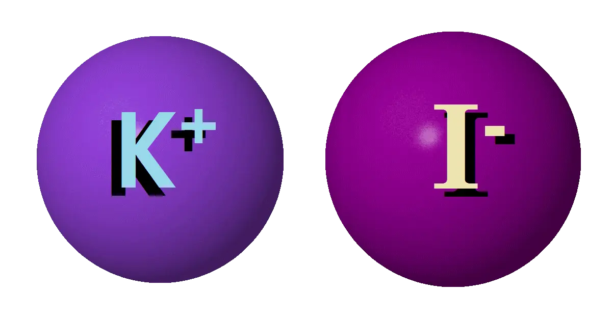
K+ is a potassium ion; I− is an iodide ion
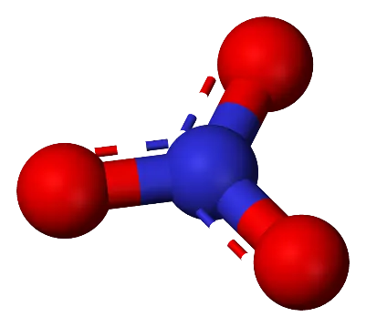
NO3− is a nitrate ion: a whole molecule with a charge
Atoms that lost electrons, so they have more protons than electrons. Positive. Usually metals.
Anions
Cl−
Atoms that gained electrons, so they have more electrons than protons. Negative. Usually non-metals.
Cat-ions are paw-sitive
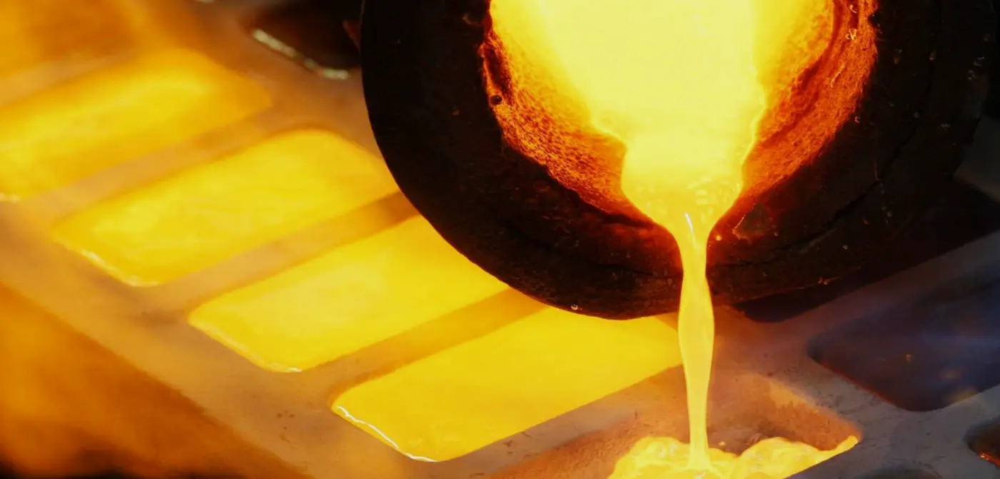
Metals like gold (Au) can lose electrons to form positively charged cations (Au+)
Atoms lose or gain electrons to get a full outer shell. Metals have 1–3 outer electrons, so they lose them. Non-metals have 5–7, so they gain more.
Atom
Electrons
Change
Ion
Electrons
Sodium, Na
2.8.1
loses 1 e⁻
Na+
2.8
Magnesium, Mg
2.8.2
loses 2 e⁻
Mg2+
2.8
Chlorine, Cl
2.8.7
gains 1 e⁻
Cl−
2.8.8
Oxygen, O
2.6
gains 2 e⁻
O2−
2.8
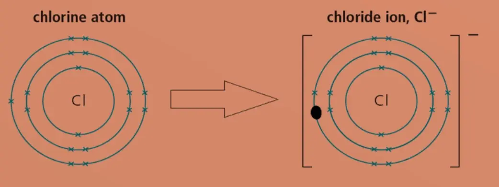
Chlorine atom → chloride ion, Cl−
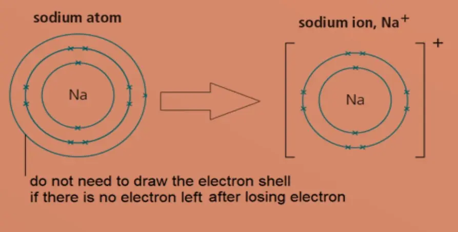
Sodium atom → sodium ion, Na+. You don't need to draw the outer shell once its electron has gone.
Whole molecules can be ions too. A phosphate ion has gained an extra electron on each of 3 oxygen atoms, so it has a charge of 3− (PO43−).
Nitrate (NO3−), sulfate (SO42−) and carbonate (CO32−) are other examples.
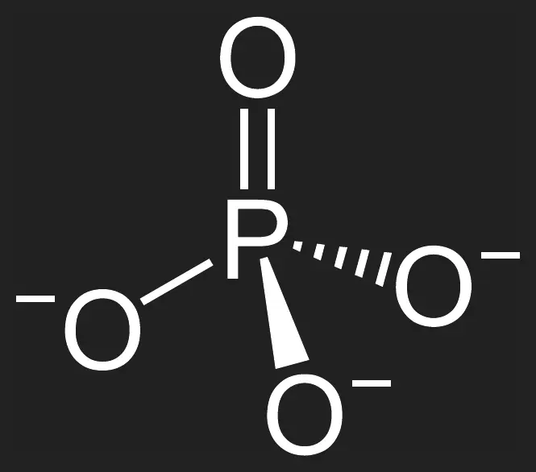
Ionic or covalent?
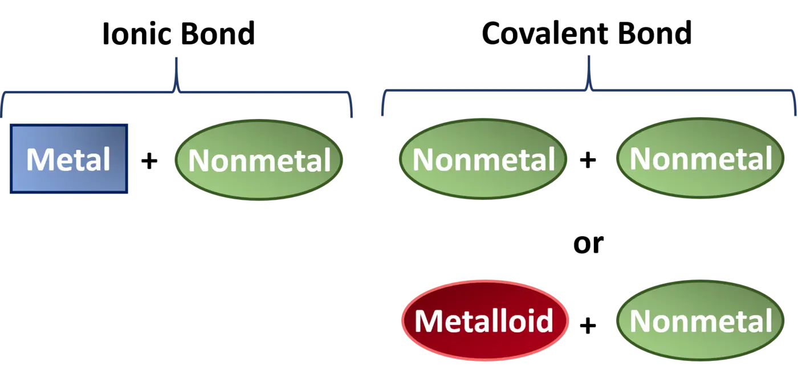
Ionic bond
Covalent bond
metal + non-metal electrons are transferred
non-metal + non-metal (or metalloid + non-metal) electrons are shared
Dot-and-cross diagrams 1.40
During ionic bonding, electrons are transferred from the metal to the non-metal. The metal becomes a positive cation and the non-metal a negative anion. Use crosses for one atom's electrons and dots for the other's. Show outer shells only.
Electron transfer from Na to F
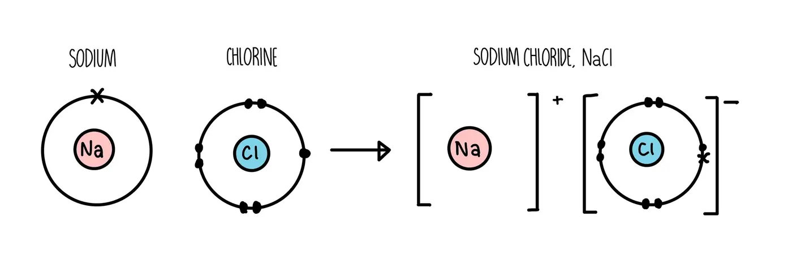
Setting out sodium chloride: atoms → ions
Drawing the ions: put each ion in square brackets with its charge at the top right. The anion now has 8 outer electrons, with the transferred ones shown as crosses. You don't need to draw a shell for the metal ion, because it has no outer electrons left.
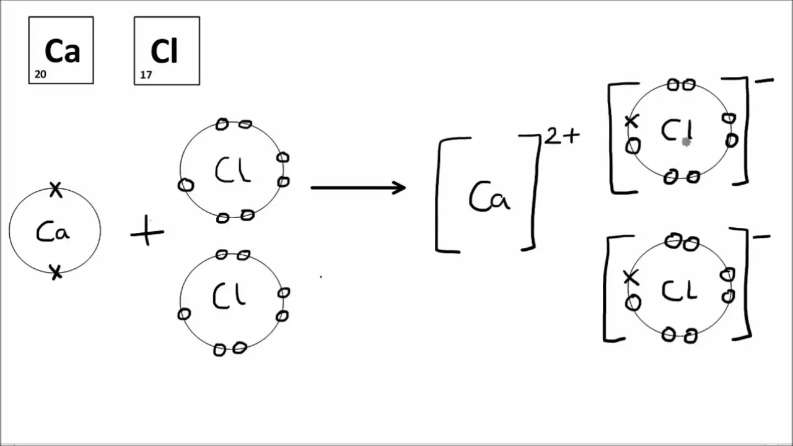
Calcium chloride, CaCl2: one Ca gives an electron to each of two Cl atoms
Common mistakes: drawing a shared pair (that's covalent!); forgetting the brackets or charges; drawing one Cl for CaCl2. Calcium loses 2 electrons, so it needs 2 chlorine atoms.
Charges you need to know 1.38
For Groups 1, 2, 3, 5, 6 and 7 the charge comes from the position in the Periodic Table:
These ions don't follow a group rule, so they have to be learned:
Ion
Charge
Symbol
Silver
1+
Ag+
Hydrogen
1+
H+
Ammonium
1+
NH4+
Copper(II)
2+
Cu2+
Zinc
2+
Zn2+
Lead(II)
2+
Pb2+
Iron(II)
2+
Fe2+
Iron(III)
3+
Fe3+
Ion
Charge
Formula
Nitrate
1−
NO3−
Hydroxide
1−
OH−
Carbonate
2−
CO32−
Sulfate
2−
SO42−
How to remember them Positive ions: "small hen and / cool zebra ina lemon – / illegal!"
1+ Silver, Hydrogen, Ammonium · 2+ Copper, Zinc, Lead, Iron(II) · 3+ Iron(III) Negative ions: "No hex! / Cake sale!"
1− Nitrate, Hydroxide · 2− Carbonate, Sulfate
small hen and cool zebra ina lemon – illegal!
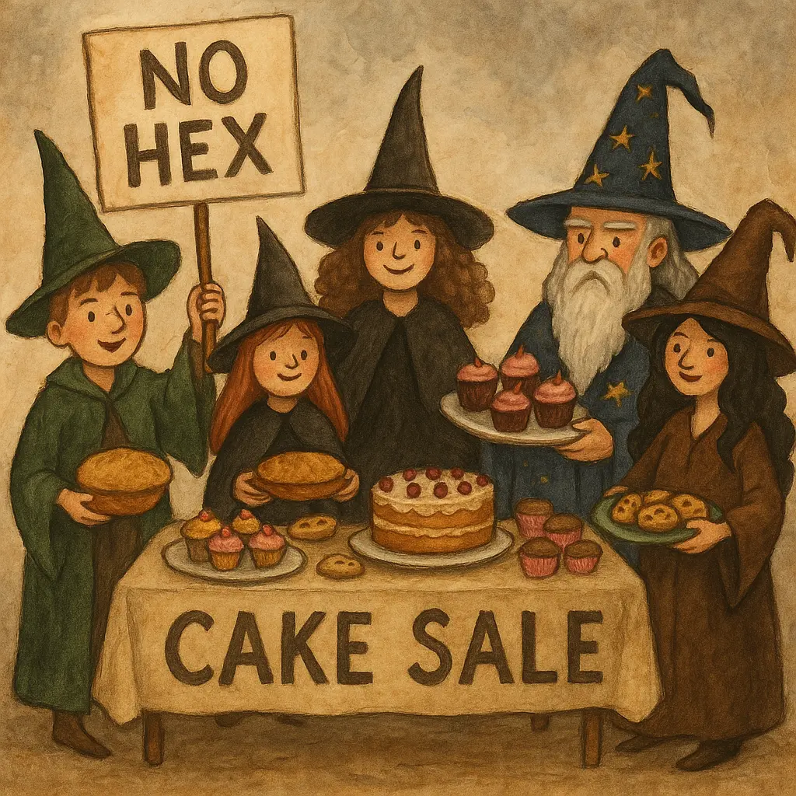
No hex! Cake sale!
Ionic compounds and giant lattices 1.411.42
Ionic compounds form when metals react with non-metals. The metal loses electrons to form a cation, and the non-metal gains electrons to form an anion.
Ionic bond: the strong electrostatic attraction between oppositely charged ions.
The ions pack closely together in a regular 3D arrangement called a giant ionic lattice. This is why ionic compounds form crystals. Each ion is attracted to the oppositely charged ions all around it.
The attraction is very strong, and there are lots of them. Lots of energy is needed to overcome them, so ionic compounds have very high melting and boiling points. Sodium chloride melts at 801 °C.
Sodium chloride lattice: purple Na+, green Cl−. Each ion is surrounded by 6 ions of the opposite charge.
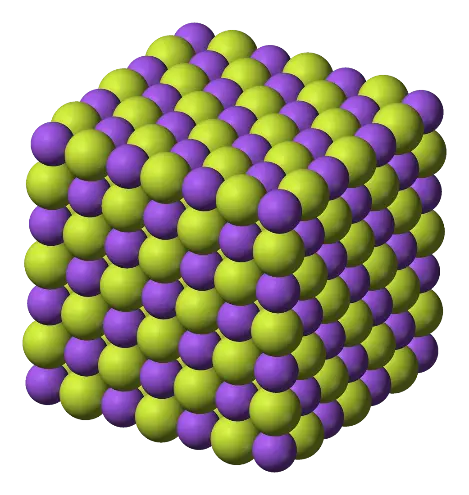
Sodium fluoride (NaF) lattice
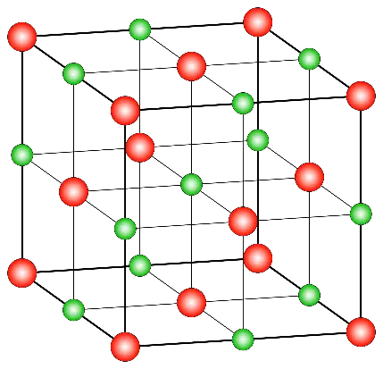
Giant ionic lattice
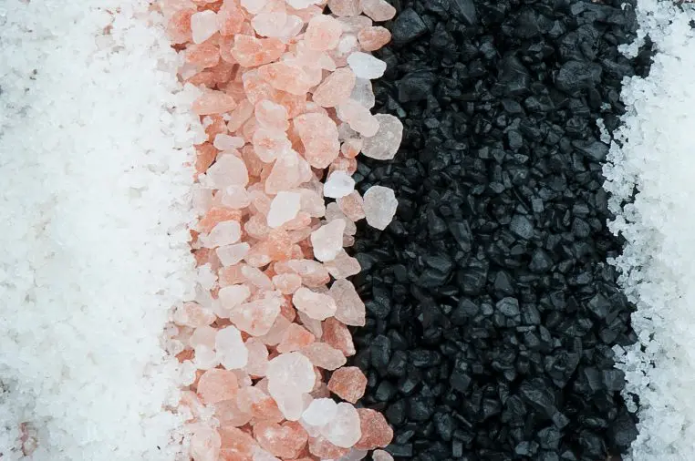
Salt crystals
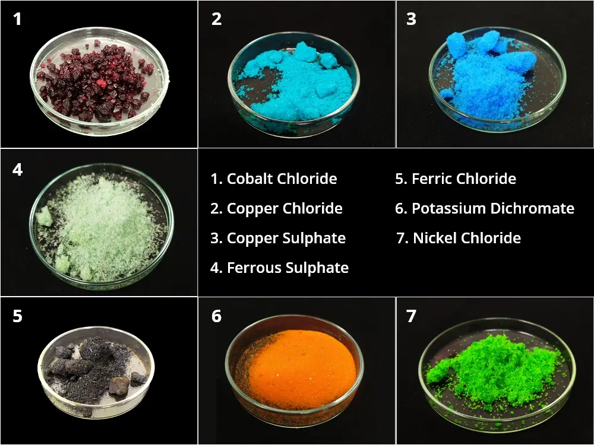
Ionic compounds form crystals, often brightly coloured
Stretch: magnesium oxide (Mg2+ O2−) melts at 2852 °C, far higher than NaCl. Its ions have double the charges, so the attractions are much stronger.
Do ionic compounds conduct? 1.43
To conduct electricity, charged particles must be free to move. Try the battery in each state:
Solid
Molten (melted)
Dissolved in water
Conducts?
No
Yes
Yes
Why
Ions are held in fixed positions in the lattice
Ions are free to move
Ions are free to move
Exam tip: in ionic compounds it is ions that move, not electrons. "Electrons move" gets no mark here.
Writing formulae 1.39
The overall charge of an ionic compound is 0: the positive and negative charges cancel each other out.
Example: calcium chloride ① Write the ions: Ca2+ and Cl− ② Find the ratio that gives a total charge of 0: two Cl− are needed to balance one Ca2+ ③ Formula: CaCl2 Put brackets round a compound ion if you need more than one of it: Ba(NO3)2.
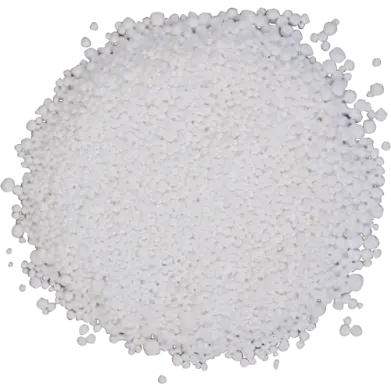
Calcium chloride, CaCl2
Practice: write the chemical formula
Sodium and chlorine
Magnesium and oxygen
Calcium and fluorine
Potassium and bromine
Aluminium and oxygen
Lithium and nitrogen
Barium and sulfur
Sodium and sulfur
Magnesium and chlorine
Calcium and iodine
Aluminium and fluorine
Potassium and oxygen
Lithium and bromine
Barium and nitrate (NO3)
Ammonium and chlorine
Show answers
NaCl
MgO
CaF2
KBr
Al2O3
Li3N
BaS
Na2S
MgCl2
CaI2
AlF3
K2O
LiBr
Ba(NO3)2
NH4Cl
Common mistakes: writing the charges in the formula (MgCl2, not Mg2+Cl2−); missing brackets (Ba(NO3)2); writing "chlorine" instead of "chloride" in the compound's name.
Check yourself
What is a cation?
A negative ion formed when an atom gains electrons
A positive ion formed when an atom loses electrons
A neutral atom
A shared pair of electrons
An atom gains 2 electrons. What is the charge on the ion?
2+
1−
2−
0
What is the formula of aluminium oxide?
AlO
Al3O2
AlO3
Al2O3
What is the formula of barium nitrate?
Ba(NO3)2
BaNO3
BaNO32
Ba2NO3
What is an ionic bond?
A shared pair of electrons
Attraction between delocalised electrons and positive ions
Electrostatic attraction between oppositely charged ions
A weak force between molecules
Why does solid sodium chloride not conduct electricity?
It has no charged particles
Its ions are not free to move
Its electrons are not free to move
Its molecules are neutral
Which of these is a 2− ion?
Nitrate
Hydroxide
Ammonium
Carbonate
Describe what happens to the electrons when calcium reacts with chlorine to form calcium chloride.
Calcium atom loses 2 electrons
Each of two chlorine atoms gains 1 electron / electrons transferred from Ca to Cl
Forms Ca2+ and Cl− ions (both with full outer shells)
Explain why sodium chloride has a high melting point.
Giant ionic lattice
Strong electrostatic attraction between oppositely charged ions
Lots of energy needed to overcome the many attractions
Draw a dot-and-cross diagram for sodium fluoride, NaF. Show outer electrons only.
[Na]+ with no outer electrons shown
[F]− with 8 outer electrons: 7 dots + 1 cross; brackets and charges on both ions
NaCl melts at 801 °C · MgO at 2852 °C (2+ and 2− ions attract more strongly)
Does it conduct?
Solid: no ions in fixed positions
Molten / dissolved: yes ions free to move
Formulae: balance the charges
Calcium chloride
Ca2+ Cl−
need 2 Cl− to cancel 2+ → total charge 0
CaCl2
Your turn: aluminium oxide
Al3+ O2−
2 × 3+ = 6+ and 3 × 2− = 6−
Al2O3
Your turn: barium nitrate
Ba2+ NO3−
need 2 NO3− → brackets!
Ba(NO3)2
Write the chemical formula
1. Sodium and chlorine NaCl 2. Magnesium and oxygen MgO 3. Calcium and fluorine CaF2 4. Potassium and bromine KBr 5. Aluminium and oxygen Al2O3 6. Lithium and nitrogen Li3N 7. Barium and sulfur BaS 8. Sodium and sulfur Na2S
9. Magnesium and chlorine MgCl2 10. Calcium and iodine CaI2 11. Aluminium and fluorine AlF3 12. Potassium and oxygen K2O 13. Lithium and bromine LiBr 14. Barium and nitrate Ba(NO3)2 15. Ammonium and chlorine NH4Cl
Ionic bonding: recap
cations lose e⁻ (metals) · anions gain e⁻ (non-metals) · dot & cross: brackets + charges · small hen… / No hex! Cake sale! · giant lattice → high melting point · conducts only when molten or dissolved · balance charges for formulae